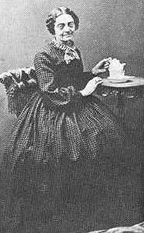
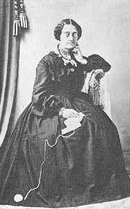
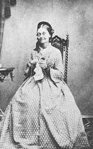
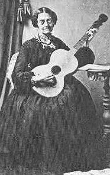
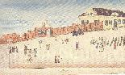
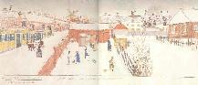
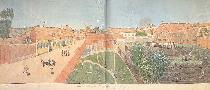
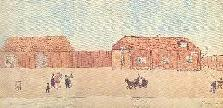
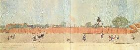
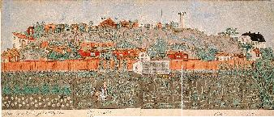

Södermalm i tid och rum
Ur boken Josabeth Sjöberg av Hans Eklund med bidrag av Göran Axel Nilsson och Gustaf Näsström
Mamsell Sjöberg av Göran Axel Nilsson
|
 |
Josabeth Sjöbergs levnadslopp var föga märkligt, och huvuddragen av hennes livs historia är snart berättade. I Katarina församlings dopbok för år 1812 är antecknat, att åt secreteraren Nils Sjöberg och hans hustru Johanna Fredrica, född Vibergsson, en dotter föddes den 29 juni. Om nu barnmorskan, fru Lejonmark, tog fel på datum eller vad det kan ha berott på, men säkert är, att mamsell Josabeth alltid senare vid mogen ålder uppgav sin födelsedag till den 30 juni. I dopet, som den 8 juli förrättades av hovpredikanten hos änkedrottning Sofia Magdalena och kyrkoherden i Katarina församling, teologie doktorn Pehr Magnus Ruus, gavs åt flickebarnet namnen Josabeth Fredrica Paulina. Faddrar och närvarande vittnen var grosshandlaren Jonas (Jonathan) Gnospelius, konduktören i Kungl. Overintendentsämbetet Samuel Enander, fru Anna Lovisa Rosenqvist samt demoiselle Maria Elisabeth Filen.
|
|
Fadern, Nils Sjöberg, var kanslist i Kongl. Maj:ts och Rikets Höglofl. Krigskollegium. Föräldrarna var vid Josabeths
födelse ganska till åren, fadern 47 och modern 40 år. I hem
met på Söder, beläget i kvarteret Kattryggen, som begränsades av Timmermans-, Tavast- och Besvärs- (numera Brännkyrka-) gatorna samt Blecktornsgränd, uppväxte förutom
Josabeth även en några år äldre broder, Nils, född den 23
juli 1809. Kongl. sektern, som av allt att döma hade det ganska bra, flyttade så småningom med sin familj in i ett ägandes
hus vid Borgmästaregränd 3 (kv Beckbrännaren 13). Där
finner vi föräldrar, barn och pigan Maria Margareta Lindgren
år 1820. Lilla Josabeth var då åtta år gammal. Om fadern
antecknas i mantalsuppgiften för detta år att han dricker vin
och kaffe, fru Johanna dricker kaffe och nyttjar sidenkläder. Hemmet var med andra ord tämligen burget. Föräldrarna lär dock ha ägnat föga tid åt barnen. Fadern gick vid sidan av sitt yrke helt upp i sitt livsintresse, musiken, och modern, en eterisk varelse av starkt romantisk läggning, säges för det mesta ha tillbringat sin tid på en chaiselongue, fördjupad i läsningen av "fransyska romaner". I färd med dylika för romantikens tidsålder typiska sysselsättningar fann hon måhända barnen mest till besvär och hade för övrigt med sin utpräglade estetiska uppfattning svårt att förlika sig med dotterns av naturen föga gynnade yttre. Josabeth blev således redan tidigt lämnad ganska mycket åt sig själv och var väl snart nog förtrogen med ensamheten. Ännu hade mamsell Bremers emanciperade samhällsromaner icke satt den ogifta kvinnans problem under debatt, och för en stackars borgarflicka utan friare fanns det vid denna tid guvernantens. Josabeth Sjöberg valde den senare, hon blev musiklärarinna.
|
 |
|
 |
När Josabeth fyllt aderton år, avled modern och följdes
två år senare, 1833, av sin make. Nu upplöstes hemmet.
Något arv fanns ej utan sonen, numera välbeställd byggmästaregesäll, fick i stället inskrida och gälda boets överstigande
skuld på omkring etthundrafemtio riksdaler banco. Första
tiden efter faderns död bodde de båda syskonen på skilda
håll, troligen hos bekanta till familjen, båda i Johannes församling. Snart nog hyrde de emellertid gemensamt in sig
hos banco casseuren A. Mårtenssons änka på Södermalm i
nummer 8 Södermanlandsgatan (numera Södermannagatan, kv Båtsmannen större). Broderns principal, conducteur Djurson vid Tjärhovsgatan 15, synes ha tagit hand om
såväl den unge timmermansgesällen som hans syster. Förmodligen hushållade Josabeth försin bror under de närmast
följande åren, men när denne så småningom ingick äktenskap med Sofia Albertina Vestman, stod systern helt ensam. Hänvisad till att försörja sig själv, annonserade hon sig nu som lärarinna i musik, huvudsakligen i pianospel men troligen också i gitarrspel och sång. Barndomshemmet hade, som nämnts, varit mycket musikaliskt. I bouppteckningen efter fadern förekommer bland annat "Atskillige Böcker och Musikalier" samt "1 Violin med Stråke i Foderal, 2 Notställare". Bland familjens umgängesvänner märktes ju även grosshandlaren Gnospelius och hans maka Maria, född Kjellstedt. I deras hem gjordes mycket musik, och här uppväxte sonen Vilhelm Teodor, den blivande tonsättaren.
|
|
Endast få yttre händelser ur mamsell Sjöbergs levnad är
oss från och med nu bekanta. Utrustad med en tämligen
klen hälsa måste hon vid upprepade tillfällen söka läkarvård.
Så opererades hon år 1850 för någon bröståkomma av dåvarande fattigläkaren i Maria församling, doktor Knut Fabian
Levin. Till denne av alla så omtyckte läkare synes mamsell
Josabeth ha fattat stort förtroende och mycken tillit. På hans
ordination besöker hon sommaren 1856 Sabbatsbergs hälsobrunn. För övrigt synes hon ej alls ha varit av något livsfientligt eller dystert sinnelag, trots sin ensamma ställning i livet. Många vänner och bekanta fann vägen till hennes små kryp in på Söder och vi skall se att hon själv hade en vaken blick för sin omgivning och ett livligt personintresse. Till hennes karakteristik må kanske ytterligare anföras att hon lär ha varit mycket road av att bli fotograferad - tros sin omtalade fulhet. Sin hemtrakt - Södermalm - förblev mamsell Sjöberg trogen. Där föddes hon och där levde hon så gott som hela sittliv. Sjuttio år gammal insjuknade hon såsvårt att hon måste överföras från sin bostad till Allmänna Försörjningsinrättningen vid Reparebansgatan på Kungsholmen. Där inskrevs hon den 8 december 1882.
I trettioen akvareller skildrar hon sina olika bostäder.
Sedan hon blivit
|

Mamsell Sjöbergs trettioen interiörer från sina tolv bostäder ger en pålitlig och charmfull inblick i dåtida bostadsskick, men de kan bli lite enahanda i sin tålmodiga upprepning av vissa ständigt återkommande bildelement. Vill man se hennes finaste artistiska egenskaper, bör man vända sig till hennes akvarellerade utsikter över grannskapet där hemma på Söder. Hennes teckningsmanér är i början ytterligt enkelt och mycket valhänt, men så småningom blir hon skickligare, allteftersom åren går. Här föreligger en hel svit, omfattande en tid av fyrtiofyra år, från 1838 till 1882. Bostäderna fördelar sig på nedanstående sätt.
|
|
1838 Första bostaden. Hos styckmästaren vid SlaktarämbetetAnders Rydell, som var gift med hennes barndomsvän Anna Sofia Appelberg, Pilgatan (nuvFolkungagatan) 28, n b, kv Beckbrännaren mindre.
Maria Högbergsgata 60, 1 tr, kv Fatbursbrunnen 6- 7; hörnhuset vid Timmermansgatan.
  
Kocksgatan 27, 1 tr, kv Beckbrännaren mindre.
Katarina Högbergsgata 25, 3 tr, kv Pelarbacken större 6, hörnhuset vid Kapellgränd.
Hos stadstjänaren J. A. Källbom, S:t Paulsgatan 20, 1 tr, kv Rosendal större 3, hörntomten vid Bellmansgatan.
Hos trädgårdsmästare Bellander, Renstjärnasgränd 17, n b, in på gården, kv Kransen (jfr sjätte bostaden).
|
1839-41 Andra bostaden. Hos kopparslagaränkan Catharina Elisabeth Jagare, S:t Paulsgatan 28, 3 tr, kv Hagen (Sockerbruket Tuppen).
Hos en mamsell Wallerqvist, Tavastgatan 13, n b, kv Ugglan mindre.
Hos sirapskokaren C. E. Blomqvist, Gröna gatan 5 (nuv. Krukmakaregatan), n b, kv Hagen.
Hos trädgårdsmästareänkan M. B. Bergqvist, Renstjärnasgränd 17 (nuv Renstjärnasgatan), n b, kv Kransen (hörnhuset vid Folkungagatan, förr benämnd Pilgatan). Åren 1857 - 58 samt 1873 - 74 bodde mamsell Sjöberg på samma ställe, nämligen vid Renstjärnasgränd 17. Hon har därifrån gjort ett flertal akvareller. Först hyrde hon hos fru Bergqvist och hade där två rum, förmak och sängkammare. Köket brukades gemensamt. Sängkammaren vette åt gatan, förmaket åt gården.
  
Samma rum som sjätte bostaden.
Blecktornsgränd 6, 2 tr, (= vinden), kv Katthuvudet. |